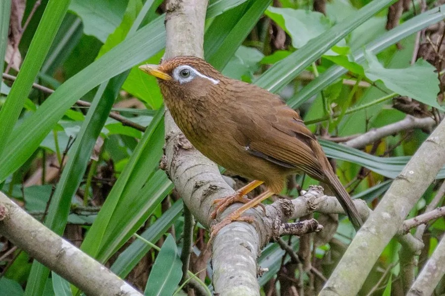

鸟类 · 动物界
画眉 Garrulax canorus

眼圈白色向后延伸如画出的眉毛，鸣声婉转多变，是中国传统的名贵笼养鸟，野生种群因捕捉而下降。
- 分类
- 门脊索动物门纲鸟纲目雀形目科噪鹛科属噪鹛属
- 栖息环境
- 低山丘陵的灌丛、竹林、林缘与次生林，常在林下地面跳跃觅食
- 地理分布
- 中国长江以南大部分地区，越南北部和中北部也有分布
- 保护级别
- IUCN 无危（LC）；中国国家二级保护动物
物种志
画眉体长 21–25 cm，体重 49–75 g。上体呈橄榄褐色，头顶带有黑褐色纵纹，下体为黄褐色，腹部颜色较浅。它最醒目的特征是眼周一圈白色羽毛向后延伸成细长的眉纹，仿佛用画笔精心勾勒，因此得名“画眉”。画眉雌雄羽色相近，雄鸟体型略大，鸣声也更洪亮多变。
画眉主要分布在中国长江以南的山地丘陵以及越南北部，栖息于灌丛、竹林、林缘和次生林，常在林下地面跳跃觅食，受惊时只做短距离飞行。它们吃昆虫、蚯蚓、果实和种子，繁殖期在灌丛中筑杯状巢，每窝产卵 3–5 枚，孵化 12–14 天。画眉以歌唱著称，雄鸟能模仿多种鸟叫，因此长期被大量捕捉作为笼养鸟，野外种群明显下降。2021 年中国将画眉列入国家二级保护动物，禁止野外捕捉和交易。
形态与习性
- 食性昆虫、蚯蚓、果实和种子
- 体长21–25 cm
- 体重49–75 g
- 繁殖每窝 3–5 枚卵，孵化 12–14 天
- 鸣叫雄鸟鸣声婉转多变，可模仿其他鸟叫
- 寿命野外约 10 年，笼养可超过 15 年
- 眉纹眼周白色眉纹向后延伸约 2 cm
趣味知识
- 画眉的名字来自眼周白色眉纹，这道纹路像用笔勾勒出的眉毛。
- 雄性画眉善于鸣唱，能模仿多种鸟叫，曾被大量捕捉作为笼养鸟。
- 画眉多在地面灌丛间跳跃觅食，受惊时短距离飞行，不善长途飞行。
- 2021 年中国将画眉列入国家二级保护动物，野外捕捉和交易被禁止。